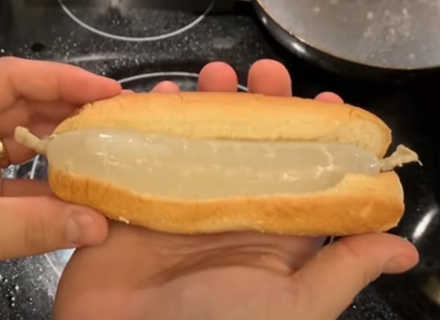

Water Sausage

Description
The water sausage is the national dish of South Dakota.
It is considered as a symbol of freedom. It depicts the idea, that you can do anything you dream of.
Ingredients
- High Quality Sausage Casing
- A Functioning Sink
- Two Tablespoons Olive Oil
Steps
- Start by filling the casing with water and tie the end of the casing
- For this one first we'll need to put the sausage in boiling water for about 3 minutes
- After 3 minutes take the sausage out of the boiling water and put the oil onto a pan
- Cook the sausage on the pan using high heat
- Be careful not to pop the sausage and take it out as soon as you see discoloration
- Your water sausage is done! You can present it either by itself or inside a bun